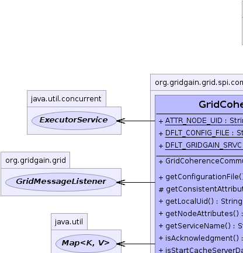
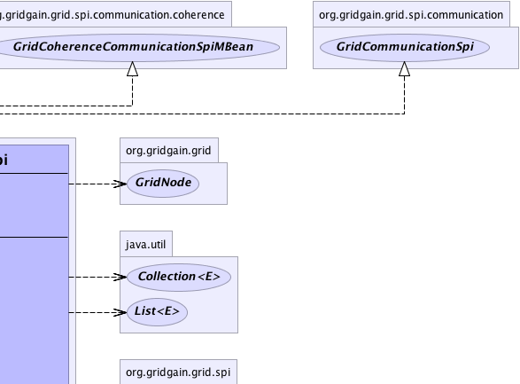
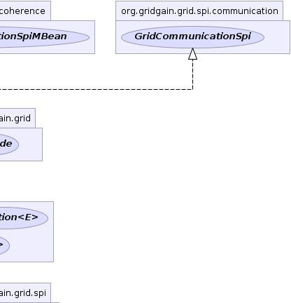
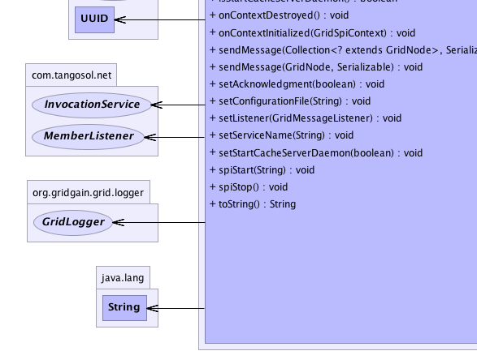
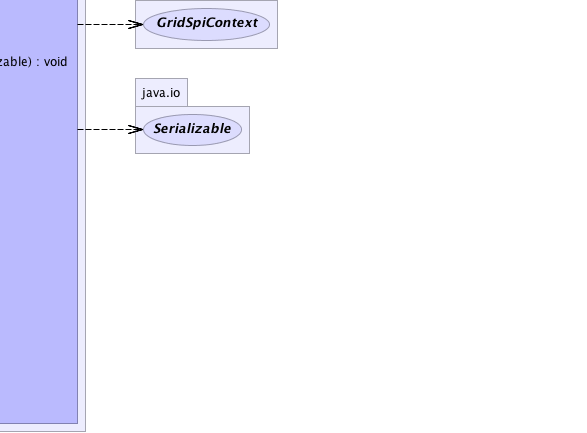
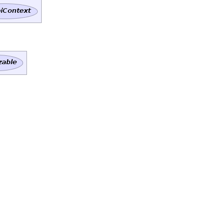

org.gridgain.grid.spi.GridSpiAdapter
org.gridgain.grid.spi.communication.coherence.GridCoherenceCommunicationSpi
org.gridgain.grid.spi.GridSpiAdapter
org.gridgain.grid.spi.communication.coherence.GridCoherenceCommunicationSpi
|
GridGain™ 3.1.1c
Community Edition |
|||||||||
| PREV CLASS NEXT CLASS | FRAMES NO FRAMES | |||||||||
| SUMMARY: NESTED | FIELD | CONSTR | METHOD | DETAIL: FIELD | CONSTR | METHOD | |||||||||
java.lang.Object
@GridSpiInfo(author="GridGain Systems, Inc.",
url="www.gridgain.com",
email="support@gridgain.com",
version="3.1.1c.14072011")
@GridSpiMultipleInstancesSupport(value=false)
public class GridCoherenceCommunicationSpi
Oracle Coherence implementation of GridCommunicationSpi SPI. It uses Coherence data
grid framework to communicate with remote nodes.
SPI uses Coherence asynchronous apply InvocationService.execute(Invocable, Set, InvocationObserver)
to send a message to remote node. If parameter GridCoherenceCommunicationSpi.setAcknowledgment(boolean)
is set to true, then this SPI will use Coherence
InvocationObserver to wait for request completion acknowledgment.
This SPI has no mandatory parameters.
This SPI has the following optional parameters:
GridCoherenceCommunicationSpi.setAcknowledgment(boolean)).GridCoherenceCommunicationSpi.setServiceName(String)}).GridCoherenceCommunicationSpi commSpi = new GridCoherenceCommunicationSpi(); // Override default false setting. commSpi.setAcknowledgement(true); GridConfigurationAdapter cfg = new GridConfigurationAdapter(); // Override default communication SPI. cfg.setCommunicationSpi(commSpi); // Starts grid. G.start(cfg);
<bean id="grid.custom.cfg" class="org.gridgain.grid.GridConfigurationAdapter" singleton="true">
...
<property name="communicationSpi">
<bean class="org.gridgain.grid.spi.communication.coherence.GridCoherenceCommunicationSpi">
<property name="acknowledgment" value="true"/>
</bean>
</property>
...
</bean>
Note: Coherence is not shipped with GridGain. If you don't have Coherence, you need to
download it separately. See http://www.oracle.com/tangosol/index.html for
more information. Once installed, Coherence should be available on the classpath for
GridGain. If you use ${GRIDGAIN_HOME}/bin/ggstart.{sh|bat} script to start
a grid node you can simply add Coherence JARs to ${GRIDGAIN_HOME}/bin/setenv.{sh|bat}
scripts that's used to set up class path for the main scripts.
Note: When using Coherence SPIs (communication or discovery) you cannot start
multiple GridGain instances in the same VM due to limitations of Coherence. GridGain runtime
will detect this situation and prevent GridGain from starting in such case.
See GridSpiMultipleInstancesSupport for details.

For information about Spring framework visit www.springframework.org
| Wiki | |
| Forum |
GridCommunicationSpi
|  |  |  |
|  |  |  |
| Field Summary | |
|---|---|
static String |
ATTR_NODE_UID
Name of cluster member Id attribute added to local node attributes at startup (value is comm.coherence.member.uid). |
static String |
DFLT_CONFIG_FILE
Default Coherence configuration path relative to GridGain installation home folder (value is config/coherence/coherence.xml). |
static String |
DFLT_GRIDGAIN_SRVC
Default Coherence invocation service name (value is gridgain.comm.srvc). |
| Constructor Summary | |
|---|---|
GridCoherenceCommunicationSpi()
|
|
| Method Summary | |
|---|---|
String |
getConfigurationFile()
Gets either absolute or relative to GridGain installation home folder path to Coherence XML configuration file. |
protected List<String> |
getConsistentAttributeNames()
Returns back a list of attributes that should be consistent for this SPI. |
String |
getLocalUid()
Gets Coherence member identifier string representation. |
Map<String,Object> |
getNodeAttributes()
This method is called before SPI starts (before method GridSpi.spiStart(String)
is called). |
String |
getServiceName()
Gets Coherence service invocation name. |
boolean |
isAcknowledgment()
Gets sending acknowledgment property. |
boolean |
isStartCacheServerDaemon()
Gets flag to start Coherence cache server DefaultCacheServer
on a dedicated daemon thread or not. |
void |
onContextDestroyed()
Callback invoked prior to stopping grid before SPI context is destroyed. |
void |
onContextInitialized(GridSpiContext spiCtx)
Callback invoked when SPI context is initialized. |
void |
sendMessage(Collection<? extends GridNode> destNodes,
Serializable msg)
Sends given message to destination nodes. |
void |
sendMessage(GridNode destNode,
Serializable msg)
Sends given message to destination node. |
void |
setAcknowledgment(boolean ack)
Sets sending acknowledgment property. |
void |
setConfigurationFile(String cfgFile)
Sets either absolute or relative to GridGain installation home folder path to Coherence XML configuration file. |
void |
setListener(GridMessageListener lsnr)
Set communication listener. |
void |
setServiceName(String srvcName)
Sets name for Coherence service invocation used in grid. |
void |
setStartCacheServerDaemon(boolean startCacheServerDaemon)
Sets flag to start Coherence cache server on a dedicated daemon thread. |
void |
spiStart(String gridName)
This method is called to start SPI. |
void |
spiStop()
This method is called to stop SPI. |
String |
toString()
|
| Methods inherited from class org.gridgain.grid.spi.GridSpiAdapter |
|---|
assertParameter, configInfo, createSpiAttributeName, getAuthor, getGridGainHome, getLocalNodeId, getName, getSpiContext, getStartTimestamp, getStartTimestampFormatted, getUpTime, getUpTimeFormatted, getVendorEmail, getVendorUrl, getVersion, injectables, registerMBean, setJson, setName, startInfo, startStopwatch, stopInfo, unregisterMBean |
| Methods inherited from class java.lang.Object |
|---|
clone, equals, finalize, getClass, hashCode, notify, notifyAll, wait, wait, wait |
| Methods inherited from interface org.gridgain.grid.spi.GridSpi |
|---|
getName |
| Methods inherited from interface org.gridgain.grid.spi.GridSpiJsonConfigurable |
|---|
setJson |
| Methods inherited from interface org.gridgain.grid.spi.GridSpiManagementMBean |
|---|
getAuthor, getGridGainHome, getLocalNodeId, getName, getStartTimestamp, getStartTimestampFormatted, getUpTime, getUpTimeFormatted, getVendorEmail, getVendorUrl, getVersion |
| Field Detail |
|---|
public static final String DFLT_CONFIG_FILE
config/coherence/coherence.xml).
public static final String ATTR_NODE_UID
comm.coherence.member.uid).
public static final String DFLT_GRIDGAIN_SRVC
gridgain.comm.srvc).
| Constructor Detail |
|---|
public GridCoherenceCommunicationSpi()
| Method Detail |
|---|
@GridSpiConfiguration(optional=true) public void setAcknowledgment(boolean ack)
GridCoherenceCommunicationSpi.sendMessage(Collection, Serializable)
to send message to remote nodes with or without waiting for completion.
If not provided, default value is false.
ack - Sending acknowledgment.@GridSpiConfiguration(optional=true) public void setServiceName(String srvcName)
If not provided, default value is GridCoherenceCommunicationSpi.DFLT_GRIDGAIN_SRVC.
srvcName - Invocation service name.@GridSpiConfiguration(optional=true) public void setConfigurationFile(String cfgFile)
If not provided, default value is GridCoherenceCommunicationSpi.DFLT_CONFIG_FILE.
cfgFile - Path to Coherence configuration file.@GridSpiConfiguration(optional=true) public void setStartCacheServerDaemon(boolean startCacheServerDaemon)
DefaultCacheServer
to avoid reconnection problem between grid nodes.
If not provided, default value is true.
startCacheServerDaemon - Flag indicates whether
Coherence DefaultCacheServer should be started in SPI or not.public String getLocalUid()
getLocalUid in interface GridCoherenceCommunicationSpiMBeanpublic boolean isAcknowledgment()
isAcknowledgment in interface GridCoherenceCommunicationSpiMBeanpublic String getServiceName()
getServiceName in interface GridCoherenceCommunicationSpiMBeanpublic String getConfigurationFile()
getConfigurationFile in interface GridCoherenceCommunicationSpiMBeanpublic boolean isStartCacheServerDaemon()
DefaultCacheServer
on a dedicated daemon thread or not.
isStartCacheServerDaemon in interface GridCoherenceCommunicationSpiMBeanpublic Map<String,Object> getNodeAttributes() throws GridSpiException
GridSpi.spiStart(String)
is called). It allows SPI implementation to add attributes to a local
node. Kernel collects these attributes from all SPI implementations
loaded up and then passes it to discovery SPI so that they can be
exchanged with other nodes.
getNodeAttributes in interface GridSpigetNodeAttributes in class GridSpiAdapterGridSpiException - Throws in case of any error.
public void spiStart(String gridName)
throws GridSpiException
spiStart in interface GridSpiGridSpiException - Throws in case of any error during SPI start.gridName - Name of grid instance this SPI is being started for
(null for default grid).
public void spiStop()
throws GridSpiException
Note that this method can be called at any point including during recovery of failed start. It should make no assumptions on what state SPI will be in when this method is called.
spiStop in interface GridSpiGridSpiException - Thrown in case of any error during SPI stop.
public void onContextInitialized(GridSpiContext spiCtx)
throws GridSpiException
This method is invoked after GridSpi.spiStart(String) method is
completed, so SPI should be fully functional at this point. Use this
method for post-start initialization, such as subscribing a discovery
listener, sending a message to remote node, etc...
onContextInitialized in interface GridSpionContextInitialized in class GridSpiAdapterGridSpiException - If context initialization failed (grid will be stopped).spiCtx - Spi context.public void onContextDestroyed()
If GridSpiAdapter is used for SPI implementation, then it will
replace actual context with dummy no-op context which is usually good-enough
since grid is about to shut down.
onContextDestroyed in interface GridSpionContextDestroyed in class GridSpiAdapter
public void sendMessage(GridNode destNode,
Serializable msg)
throws GridSpiException
sendMessage in interface GridCommunicationSpiGridSpiException - Thrown in case of any error during sending the message.
Note that this is not guaranteed that failed communication will result
in thrown exception as this is dependant on SPI implementation.destNode - Destination node.msg - Message to send.public void sendMessage(Collection<? extends GridNode> destNodes, Serializable msg) throws GridSpiException
sendMessage in interface GridCommunicationSpiGridSpiException - Thrown in case of any error during sending the message.
Note that this is not guaranteed that failed communication will result
in thrown exception as this is dependant on SPI implementation.destNodes - Destination nodes.msg - Message to send.public void setListener(GridMessageListener lsnr)
setListener in interface GridCommunicationSpilsnr - Listener to set or null to unset the listener.protected List<String> getConsistentAttributeNames()
getConsistentAttributeNames in class GridSpiAdapterpublic String toString()
toString in class Object
|
GridGain™ 3.1.1c
Community Edition |
|||||||||
| PREV CLASS NEXT CLASS | FRAMES NO FRAMES | |||||||||
| SUMMARY: NESTED | FIELD | CONSTR | METHOD | DETAIL: FIELD | CONSTR | METHOD | |||||||||
|
GridGain - High Performance Cloud Computing
|
|

|
|